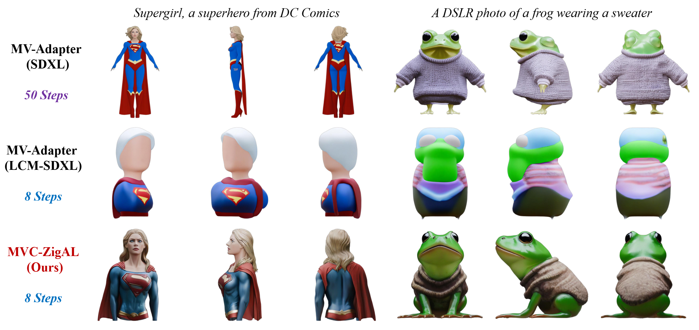
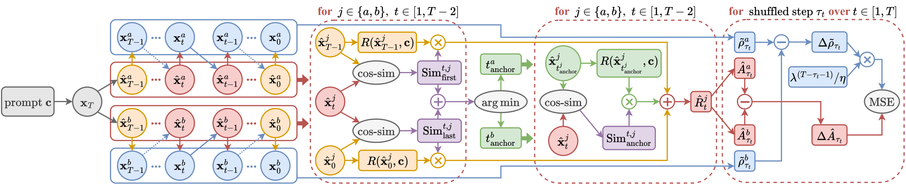
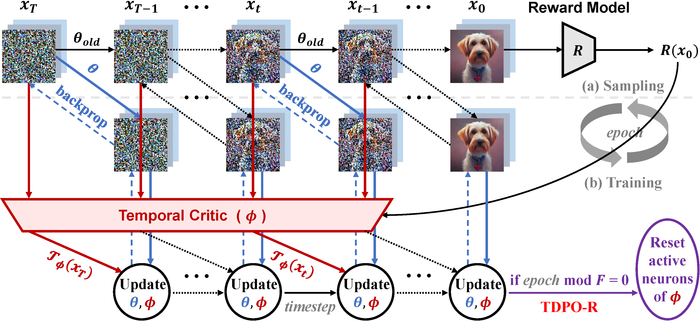
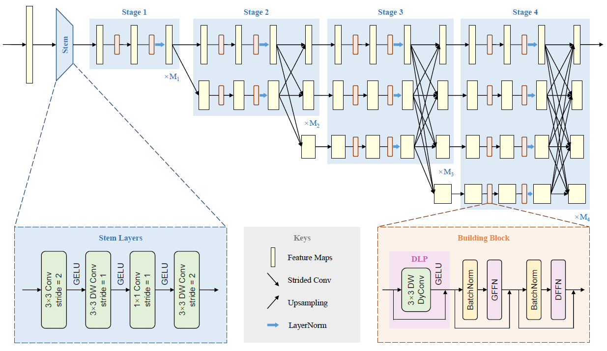
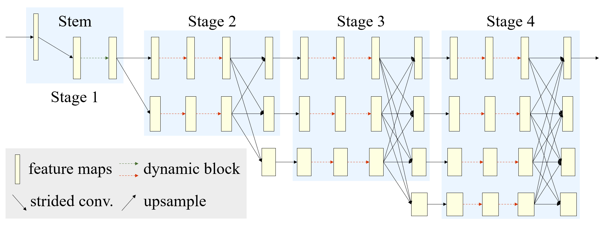

Ziyi Zhang
GitHub
|
Google Scholar
|
 ORCID
ORCID
ziyizhang27@whu.edu.cn
I am currently a Ph.D. student in Sensing IntelliGence and MAchine learning lab (SIGMA) at School of Computer Science, Wuhan University (WHU), advised by Professor Yong Luo.
Previously, I obtained my Master's degree from School of Computer Science, Nanjing University of Posts and Telecommunications (NJUPT), where I was advised by Professor Qun Li.
In addition to my academic experience, I was fortunate to have spent a productive internship at ByteDance - Pico in 2022.
I am currently interested in Generative Models, particularly in Text-to-Image and Text-to-3D synthesis, as well as Reinforcement Learning.
-

Refining Few-Step Text-to-Multiview Diffusion via Reinforcement Learning arXiv preprint, 2025
-

Aligning Few-Step Diffusion Models with Dense Reward Difference Learning arXiv preprint, 2024
-

Confronting Reward Overoptimization for Diffusion Models: A Perspective of Inductive and Primacy Biases International Conference on Machine Learning (ICML), 2024
-

HRNeXt: High-Resolution Context Network for Crowd Pose Estimation IEEE Transactions on Multimedia (IEEE TMM), 2023
-

Dite-HRNet: Dynamic Lightweight High-Resolution Network for Human Pose Estimation International Joint Conference on Artificial Intelligence (IJCAI), 2022
-
Dynamic Context Modeling Based Lightweight High-Resolution Network for Dense Prediction Engineering Applications of Artificial Intelligence (EAAI), 2024
-
Dual-Branch Framework with Convolutional Attentive Block for Video Anomaly Detection Chinese Control Conference (CCC), 2023
-
Anomaly Detection in Surveillance Videos via Memory-augmented Frame Prediction International Joint Conference on Neural Networks (IJCNN), 2022
-
Triple Loss Based Framework for Generalized Zero-Shot Learning IEICE Transactions on Information and Systems, 2022
-
Video Summarization Based on Spacial-temporal Transform Network Journal of Software, 2022
Reviewer: NeurIPS 2025, IEEE TMM, Pattern Recognition, Machine Intelligence Research, ICPR 2024, ICDM 2024